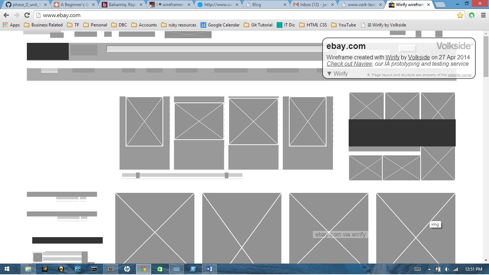
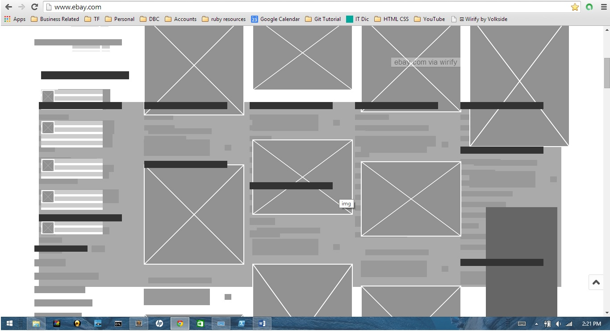
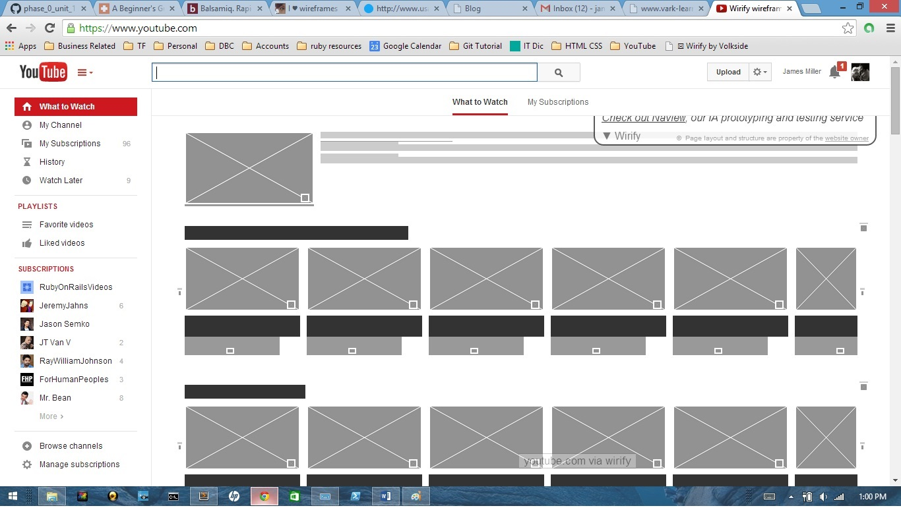

The problem this web page is trying to solve is how they can present the top stories to readers in a clean page that's aestheticly pleaseing to the eye. Another possiblity, along with most websites (unless it's just my browser), is the wireframing is cut at the bottom of the screen. This may be intended to bring curiosity to readers that there's another interesting article below. It also gives the intuitive sense that there is more information below, so scrolling is the natural option to view the rest of the page. If everything was organized and made to fit your brower page, we wouldn't suspect to scroll down. This is just a theory. The other thing you should notice are the headlines. These are the primary focal points of the page.
Keep in mind, this is the website at first glance. I haven't scrolled down or added to the screen shots. This idea is presented upon first glance.
So just in case, if a customer has never been on eBay before, they may experience the following wireframe setup. eBay doesn't use headlines to bring in customers because they understand the art of pictures means words. What they're trying to do is use an image that will captivate their audience, or potential customer. Again, notice the wireframe doesn't sit cozy in the browser space, but it shows to imply there is more by scrolling down. Please take note of how the wireframe changes once a customer scrolls down one page length. You'll notice a big change in the wireframe and understand what I mean when I say this website is about pictures.
Finally, we move on to one of our last comparisons. The page is trying to solve how to organize channels or videos you may be interested in. Customers don't want an eBay like experience just randomly browsing hundreds of pictures. YouTube is focused on building the content that's right for their viewers. Notice that we mean viewers and not readers. The site contains minimal reading and is organized by video snapshots and headlines. So it's upon YouTube to overcome the visual challenge that something needs to attract views to click on links. Besides, how else are they going to make money once you click on the videos and watch the annoying ads prior to your video ;)
